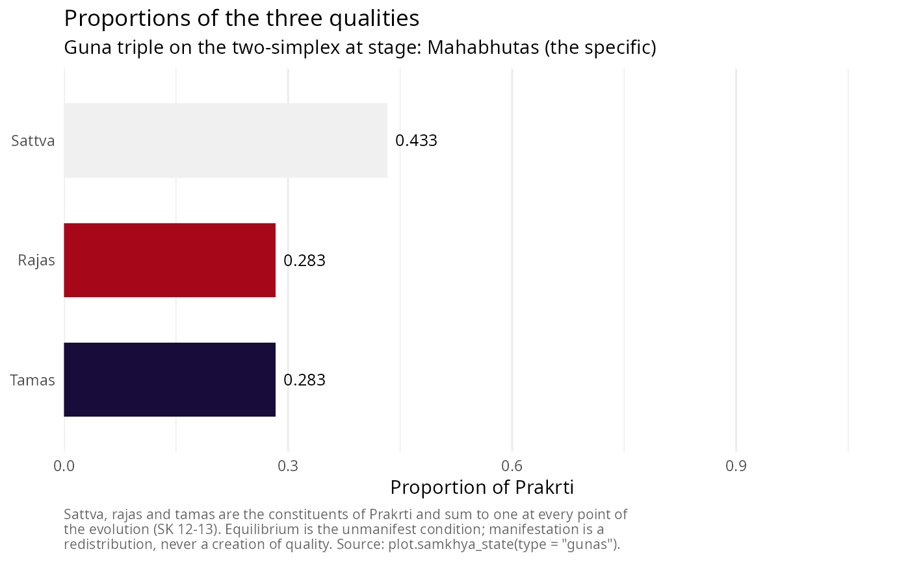
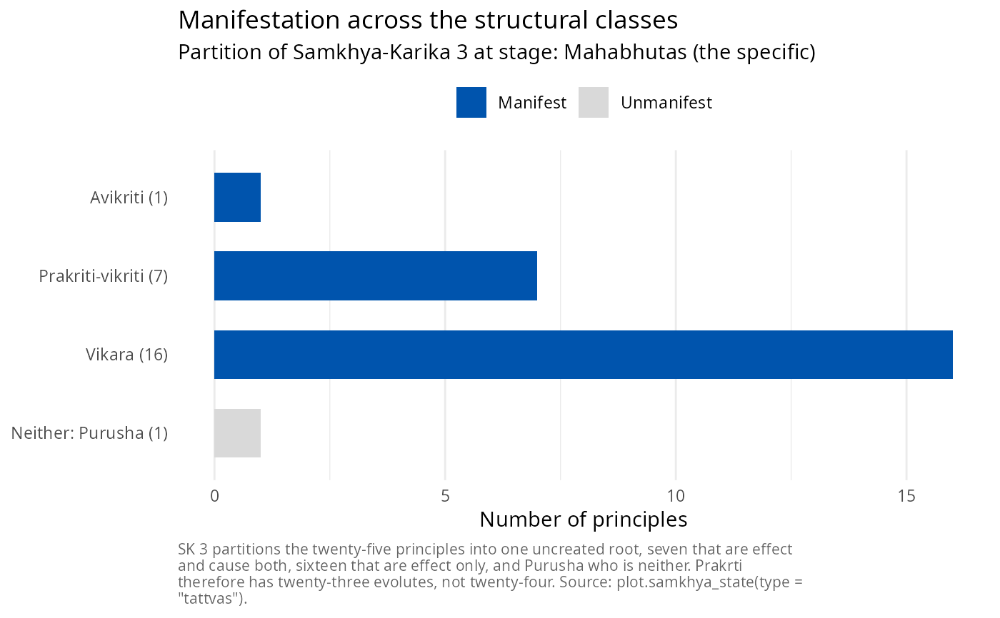
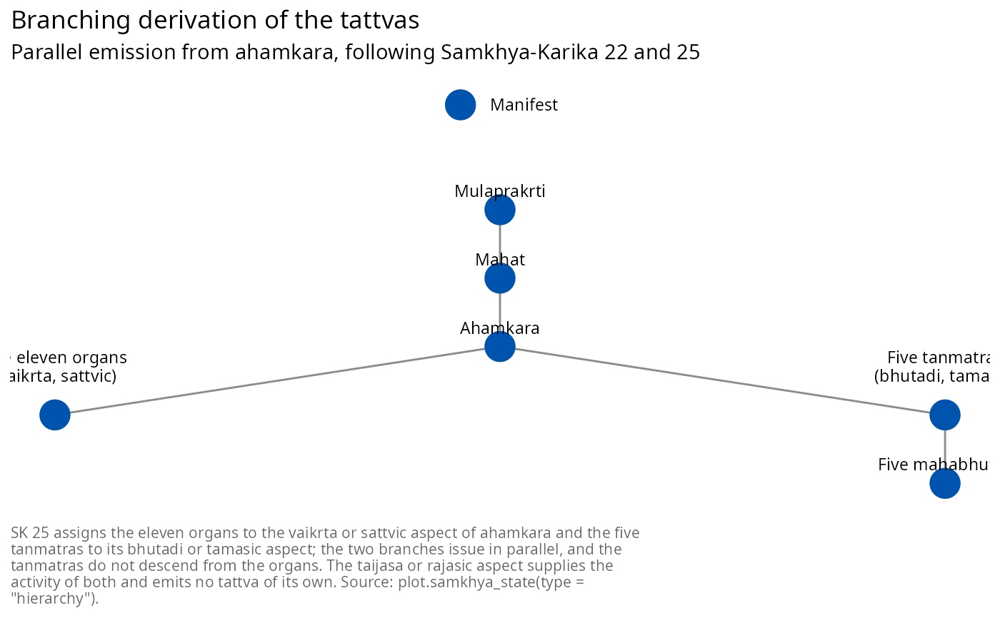

Renders the current state in one of three views: the proportions of the three qualities, the progress of manifestation across the structural classes of Samkhya-Karika 3, or the branching derivation of Samkhya-Karika 22 and 25 as a layered graph.
Details
The default view is the guna simplex because the three qualities are the quantity the evolution functions actually change; the other two views are structural and change only in which principles are shaded as manifest.
The "hierarchy" view draws the derivation as the karika states it: manas
and the ten organs on one branch from ahamkara and the five tanmatras on
another, issuing in parallel rather than in sequence, with the gross elements
descending from the tanmatras alone.
See also
print.samkhya_state(), summary.samkhya_state(),
create_samkhya_flowchart() for the Mermaid rendering of the same graph.
Examples
s <- samkhya_evolve(verbose = FALSE)
plot(s)

plot(s, type = "tattvas")

plot(s, type = "hierarchy")
